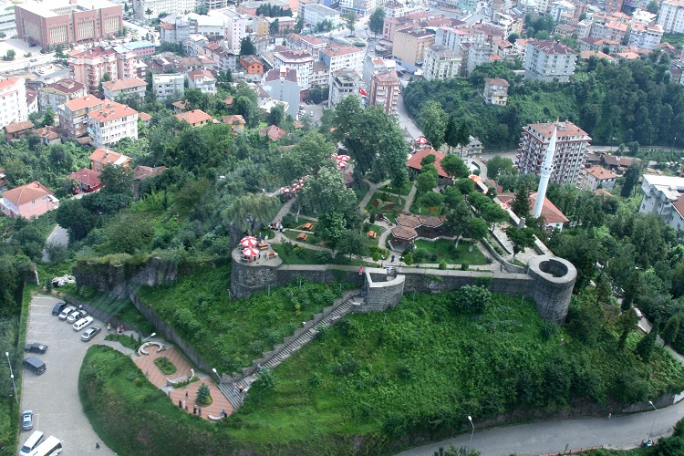
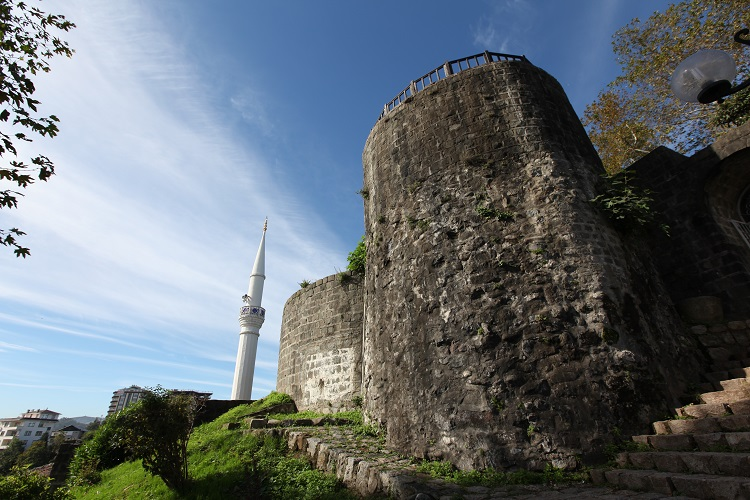
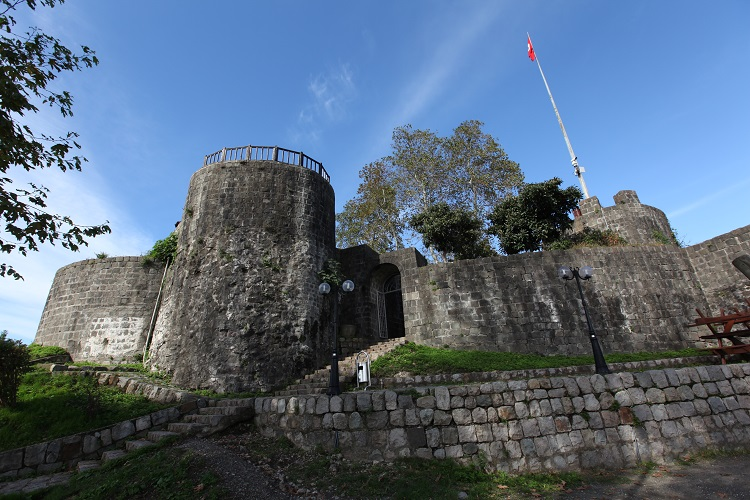
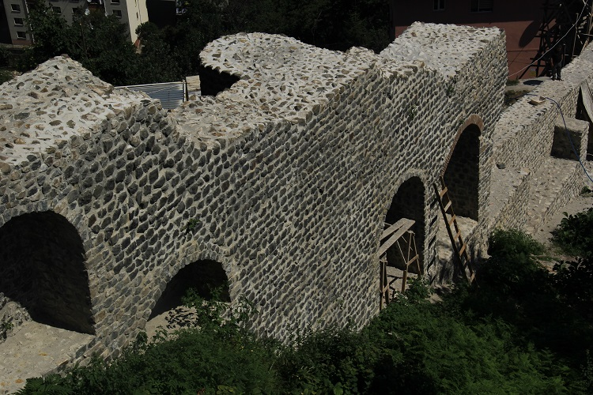
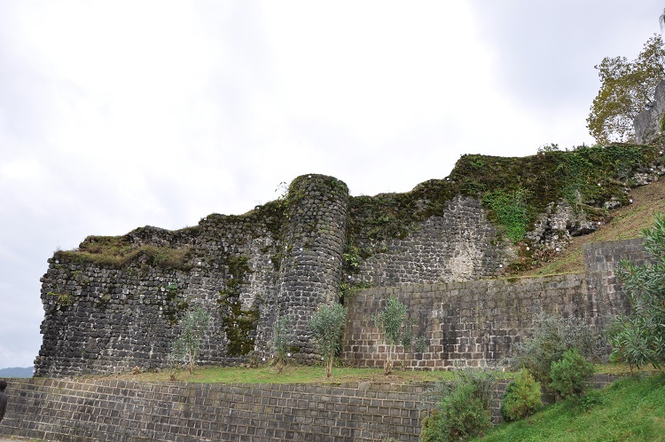

RİZE KALESİ

Kale, şehir merkezinin güneybatısında 480 m²lik bir alan üzerine kuruludur. İç ve aşağı kalelerden oluşur. İç kalenin I. Justinianus(527-565) döneminde, aşağı kalenin ise 13. yüzyılda inşa edildiği düşünülmektedir. Kale çevresi, yapılan çevre düzenlemesiyle çay bahçesi olarak işletilmektedir. Kenti seyir için kent merkezindeki ideal noktalardan biridir.
Günümüzde kale dört bölümde incelenmektedir.
- İç Kale
- Aşağı Kale
- İç Kale ile Atatürk Caddesi arasındaki Dış Kale kalıntıları
- Eski SSK Hastahanesinin doğusundaki surlar


- Sur duvarlarını güçlendirmek için yapılmış destek kuleleri ve savunma amaçlı yapılmış savunma kuleleri mevcuttur. Savunma kuleleri sur duvarları ile bağlantılı yapılmış olup genelde yuvarlak formludur. Bu kuleler arasında belli mesafelerde kare ve dikdörtgen ile yuvarlak formlu destek kuleleri vardır. Bu destek kuleleri saldıran düşmana her yönden savunma imkanı vermek üzere dışa çıkıntılı olarak yapılmıştır.
- Surların yıkılan kısımları üzerine betonarme olarak inşa edilmiş konutlar mevcuttur. Ayrıca surların izlenebilen bir kısmının üzerinden yol geçmektedir.
- ale ve sur yükseklikleri yaklaşık 2 metre ile 20 cm arasında değişmektedir. Duvar kalınlıkları 2-3 metre civarındadır. Yapı malzemesi olarak yontu taş ve horasan harcı kullanılmıştır. Kalenin güneyinde yer alan ve 1989 yılında onarım gören bölümler ise düzgün yontu taşıdır.


Rize Kalesi 22.08.2011 tarih ve 175851 sayılı Kültür ve Turizm Bakanlığımız Kültür Varlıkları ve Müzeler Genel Müdürlüğü 2011 yılı yatırım programında yer almış, rölöve, restorasyon, restitüsyon ve çevre ve aydınlatma projeleri tamamlanmış, proje uygulanmasına başlanmıştır. Restorasyon çalışmaları devam etmektedir.